| 21世紀のクリヤヨガ: 性エネルギーを活用して超人になる (Kanda-Yoga出版) | |
| マリア・ステファノ | |
| (2018) | |
この本では点を線にするという意図をもって書かれた。
多くの読者はもうすでになんらかの知識があり
訓練を受けていると思う。
この本では数多い著作や教義が指し示しているものを
明確に示すとともに、
広く知られている知識が具体的にどのような技法に
つながるのかを、テクニックを図解することで伝える。
問題というものは、心の中から出てくるものだが、
十分な心理的エクササイズを行わずに、
クンダリニーの上昇を目指すということは、
例えるならば、
軽自動車にジェットエンジンを積んで発射するようなものである。
古来からクンダリニーが危険とされており、
性エネルギーを昇華することにより、心と感情、
その結果、目覚めるのがクンダリニーであることを
改めて強調しておきたい。
目次
多くの人にとって性とは生殖の手段でしかない。
人だけではなく、一部の例外を除いて
動物も植物も雌と雄の区別が存在している。
胞子や単細胞生物などの分裂生殖以外では
生命は男女（雌と雄）の交配によって成立する。
しかしながら人間の場合は繁殖期というものが存在せず、
社会環境と思考と感情に大きく左右される
という点で他の生物は一線を画している。
この人間の特徴というべき、
性の奔放さこそが現代では大きな問題となっている。
なぜなら、他の生物では一定の周期や繁殖期以外は
発情することもなく、
また妊娠、出産、育児という過程に入れば、
雄（雌）を追い出すことさえするのに対して、
人間は24時間、365日性行為が可能であり、
また、インターネットやメディアの普及により、
必要以上に五感からの性的刺激を受けており、
そのことが性エネルギーの暴走となり
様々な犯罪や社会問題に結びついているからだ。
それでは人間にとって性とはどんな意味があるのだろうか？
それは精神的進化を遂げるための手段なのだ。
「はじめに」で紹介したように、
人類は性を神聖なものとして崇めてきた。
性エネルギーを生殖以外に高等な目的へと方向づけた時、
人間は物質を超えた存在へと進化できる。
そのような進化した人々は古来から
聖者、賢者、神人などと呼ばれ崇拝されてきた。
仏陀、キリスト、モーゼなどの存在が知られている。
進化するための科学的方法が存在し、
多くは宗教が人類を導くためにその役割を果たしてきた。
残念ながら、現代の宗教は形骸化してしまったために、
科学的方法の伝承は失われてしまっている。
古代より性エネルギーを昇華・変換する方法が知られている。
秘教では性タントラ、性魔術、
マイスーナなどの名前で知られている。
ヨーロッパでも、その教えは秘密とされ、
賢者の石、アゾエ、万能薬エリクサーとも言われてきた。
この本では、秘教の教義のエッセンスを抽出し、
現代人が実践しやすいように編纂した。
21世紀に入り、性科学を公開することは急を要する。
20世紀では精神医学者のジークムント・フロイトが
リビドー（性エネルギー）が
人間の精神の根底にあることを解き明かし、
カール・グスタフ・ユングが元型論を展開して
無意識の世界の謎を研究した。
ユングが説いた大地母神、グレートマザーこそ
無意識下に存在する人間の根源エネルギーである。
このエネルギーはクンダリニー、シャクティと呼ばれる。
この神聖とも言えるエネルギーを無視し、
乱用したために、
精神の病、性の乱用による社会秩序の混乱を
招いていると言っても過言ではないだろう。
性エネルギーを昇華することによってのみ
クンダリニーは目覚める。
クンダリニーは尾骨に存在する力である。
多くの人はクンダリニーが目覚めることにより、
超能力が得られると思っているが、
それは間違っている。
"クンダリニーは性エネルギーを正しく方向づけて、
精神的進化を遂げた時に
ゆっくりと背骨を上昇するのである"
クンダリニーを目覚めさせるだけの技法は
非常に危険であり、必然的に暴走したエネルギーによって
破滅的な結果となる。
それゆえ正しい知識と技法を学ばなければならない。
もし力、超能力だけを求める人は、
この科学的方法、
ラージャ・ヨガには近づかないほうが身のためである。
しかし、
正しい目的と知識、そして技術を学ぶものは
人生を劇的に好転させることができる。
その結果この世界に平和と幸福をもたらすだろう。
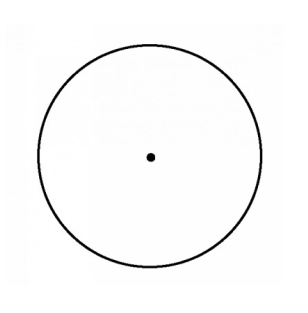
このエクササイズは集中力を強化するエクササイズである。
電子ガジェットの画面に集中してもいいし
コピーしてもいいし、手書きで書いたものを壁などに貼って
練習することができる。
【方法】
両目を開いて注意を大きな円に向ける。
十分に集中したら、
次は真ん中の点に注意を向ける。
次に真ん中の点を見つめながら同時に大きな円に意識を集中する。
ポイント
このエクササイズの間はマインド（心と感情）から
考え、想念、イメージなどを完全に排除する。
呼吸は自然にまかせておく。
このエクササイズによって意識を「今ここ」という
瞬間に目覚めさせることができる。
性エネルギーは男性であれば精巣（睾丸）と前立腺、
女性であれば子宮と卵巣でつくられる。
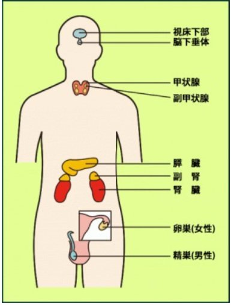
内分泌腺の詳しい説明は割愛するが、
性ホルモンのフィードバックの機序から分かるように、
視床下部と脳下垂体と性腺の間には密接な関係がある。
性エネルギーのコントロール法を習得するためには、
内分泌腺学を学ぶ必要はないが、
ホルモンの相互関係を理解することは大きな助けになる。
ここでは日頃の考え、想念と感情が性エネルギーと方向と質を
大きく左右することを心に留め置いていただきたい。
ホルモンの働きを正常なものにするためには、
1 バランスの良い食事 ベジタリアンである必要はない
2 適度な運動 ヨガの体操や週一回の有酸素運動
3 十分な休息と睡眠 とくに五感の保養
4 十分な呼吸 プラーナヤマの実践
5 質の良い想念と感情 自律神経の安定
この５つが大切である。
最近ようやく、禅やヴィパッサナー（マインドフルネス）が、
日本でも認知され始めて、
呼吸を通じて心を見つめることの大切さが理解されている。
「悟りとは何か？」という問いに対して、
「食べて 飲むことだ」という有名な禅問答がある。
心を空にするためには、ただ今ここを生きること。
最も大事な禅の教えを表したものだが、
この当たり前のことを志していただきたい。
クンダリニーは当たり前の生活の中で目覚める。
山にこもったり、断食したりなどは時には必要だが、
麻薬などのドラッグで目覚めることはない。
もし、ドラッグなどでシッディ（超能力）を得た
というのであれば、それは悪の力と断言する。
その行く末は破滅である。
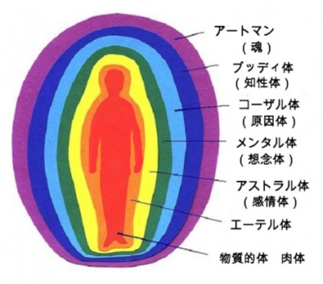
人間には７つの体が存在する。
図を参照していただきたい。
ちょうど玉ねぎのように、
人間という存在は異なった次元のエネルギーが
重なり合っている。
これらのエネルギーを認識し調整することが、
自己コントロールの基礎となり、
安全にクンダリニーを目覚めさせることになる。
・物質的体 肉体のことである。
バランスの良い食事を栄養としている。
脳（大脳、中脳、小脳）、
全身をめぐる神経系統（自律神経）
内分泌腺などの機能が肉体をささえている。
・エーテル体 電気的な体と言い表すことができる。
脳や自律神経などの神経系統をささえる
エネルギーフィールドである。
・アストラル体 星幽体 感情体とも呼ばれる。
物質に比べてより精妙な体である。
腹部にある太陽神経叢と密接な関係がある。
体内に摂取した食物は胃で消化され、
腸で吸収される。血液により循環するなかで
より微細なエネルギーに変換される。
それゆえに日々の食事の内容が
マインド（想念と感情）に大きな影響を与えるのだ。
・メンタル体 思考、想念のエネルギーフィールドである。
ヴェーダ哲学によると思考とは物質であり、
この物質的世界と根本的に同じであるという。
したがって、
今考えていることが現実世界にいずれ現れるという。
メンタル体とアストラル体は
食物に大きな影響を受ける。
例えば、飲酒、喫煙、麻薬はこの２つのエネルギーを
混乱させ麻痺させるために、
大師がたは禁じられている。
また、メンタル体とアストラル体は、
その人のマインド、つまり思考（想念）と感情
を栄養とする。
「天は自ら助くる者を助く」とはいわば
正しい生活、ヨガ的な５つの規範によって
道が開かれることを意味している。
・コーザル体 意識体とも呼ばれる
過去の記憶（前世も含む）が眠っている場所である。
原因界 高次元のカルマとダルマ（因果）
の世界とつながっている。延髄と小脳と関係がある。
・ブッディ体 知性体 知性 直感の源である
心臓、ハートのチャクラと関係が深い。
深い潜在意識からメッセージを受けるとき、
動悸がして胸に違和感を覚えるのは、
つまり虫の知らせなどは、直接心臓へと届くためである。
・アートマン わたしたちの本質 本来の自己である
ヴェーダではブラフマン（創造神）と
同一であると定義している。
パラマハンサ・ヨガナンダは眉間のチャクラを
「キリスト意識」の座であると教えた。
実際のところブラフマンとアートマンをつなぐのは
視床下部である。
ここは未分化の目が存在することで知られている。
超視覚、千里眼が眠っている。
実際のところ私たちは霊を所有しているわけではない。
秘教学では７つの体をことさら強調するが、
私たちが持っているのは不完全な体である。
イエス・キリストはカッバラーの秘密を
残している。
それは私たちが完全な体を形成しなければ
天の国には入れないという教えである。
22:8 そのとき、王はしもべたちに言った。
『宴会の用意はできているが、
招待しておいた人たちは、それにふさわしくなかった。
22:9 だから、大通りに行って、
出会った者をみな宴会に招きなさい。』
22:10 それで、しもべたちは、通りに出て行って、
良い人でも悪い人でも出会った者をみな集めたので、
宴会場は客でいっぱいになった。
22:11 ところで、王が客を見ようとしてはいって来ると、
そこに婚礼の礼服を着ていない者がひとりいた。
22:12 そこで、王は言った。
『あなたは、どうして礼服を着ないで、
ここにはいって来たのですか。』
しかし、彼は黙っていた。
22:13 そこで、王はしもべたちに、
『あれの手足を縛って、外の暗やみに放り出せ。
そこで泣いて歯ぎしりするのだ。』と言った。
22:14 招待される者は多いが、選ばれる者は少ないのです。」
マタイ福音書 ２２章8節から１４節より抜粋
礼服、婚礼服とはト・ソマ・エリアコンと呼ばれる。
それは結晶化した本当の７つの体のことである。
黄金の子供、黄金の体と密儀で伝えられてきた。
７つの体が存在し、
７匹のクンダリニーが存在する。
黄金や銀が火で純化されて鍛えられるように、
これらの体は火によって純化され結晶化する。
このようにして我々の霊は完成していく。
心と感情の浄化、記憶（サムスカーラ）の浄化
火による霊の刷新によってである。
「人はもう一度生まれなければならない」
イエス・キリスト
火はクンダリニーであり、
７つの体は純化され完成されなければならない。
火によって除去される不純物、それは自我である。
自我が消滅した時、アートマンが覚醒する。
「一粒の麦は、地に落ちて死ななければ、
一粒のままである。だが、死ねば、多くの実を結ぶ。」
ヨハネの福音書より
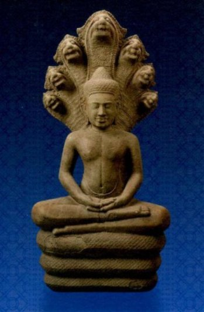
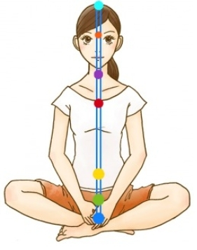
図のように中央のナディである
スシュムナを思い描く。
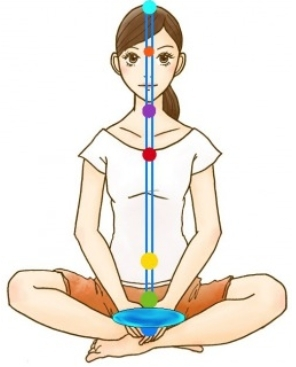
図１のように、
清らかな泉が湧き出しているように想像する。
生殖器と尾骨を覆うように、
なみなみと水をたたえている様を思い描く。
図2の清浄なる泉を思い浮かべたまま
次のマントラを唱える。
KANDIL BANDIL RRRR
次のように発音する。
KA―N DI―L カーン ディール
BA―N DI―L バーン ディール
ルルルルー
発音のポイント：
KANは高い音程で発音しDILは低い音程で発音する。
BANは高い音程で発音しDILは低い音程で発音する。
RRRRは甲高く子供が遊びで発するように、
ラテン音楽で合いの手が発声するかのように、
巻き舌で下を震わせて発音する。
イマジネーション：
KANDIL BANDILでは生殖器と尾骨を意識して、
下腹部に湧き上がる泉を想像する。
RRRRと発音すると同時に、
性エネルギーが中央のスシュムナ管を上昇し、
噴水のように頭頂部から吹きだしていく。
意念：
KANDIL BANDILを唱える時は、
生殖器と下腹部に停滞していた性エネルギーが、
マントラのパワーによって純化されていくと感じる。
RRRRのマントラによって、
純化された性エネルギーが噴水のように吹き出して、
７つの体を満たしていき充電され、
全身が活性化され生き生きと輝くことを感じる。
このエクササイズの効果
このエクササイズは下腹部に停滞していた
性エネルギーを純化させて、
サハスララチャクラから下位の６つのチャクラを
活性化する。
チャクラを不活性にしていたナディーのブロックを
解消していく。
結果的に全身をめぐるナディのエネルギーの流れを
促進する。
アドバイス：
一日のうち起床時と就寝時に行うと良い。
精神的に動揺している時や、
性的な誘惑を感じた時に行うと良い。
悪い習慣を変える時は、その思いと戦うより、
新しい習慣を身につけることだ。
思いと戦うのは岩の上に立って岩を持ち上げようと
試みるのと同じであり、結果は勝つか負けるかだ。
スワミ・シヴァナンダは、
「忘れる。無視する。面白いことを考える。」
とアドバイスしている。
スワミ・シヴァナンダ著「ヨーガとこころの科学」
小山芙美子訳 東宣出版より邦訳あり）
というスワミの著作から
チャクラの集中とクンダリニーの上昇を抜粋してみよう。
ラージャ・ヨーギーは
眉間のアージュナー・チャクラに心を集中する。
このチャクラは目覚めている時に心がある場所で、
ここに心を集中すれば、容易に心を集中できる。
・・・・・・・中略・・・・・・・・・・・・・
チャクラに集中すると、
まず心とチャクラの間に糸のようなつながりができる。
こうして覚醒された力は、スシュムナー管を経て、
チャクラからチャクラへと
スシュムナー・ナーディーを上昇する。
この上昇は忍耐強く徐々に行うことが重要である。
スシュムナー管の開口部がかすかに揺れるだけでも、
表現しがたい大きな歓びを感じ、
至福に酔い、俗世を全く忘れる。
スシュムナーの開口部が少し開くと、
クンダリニーの力がスシュムナー管に入ろうとする。
その時強い放棄と離欲の思いが起こる。
恐れが全くなくなり、
様々なビジョンを見ることが多い。
そこで表現しがたい内なる輝きを見る。
これをヨーギーの「心の存在しない状態」と呼ぶ。
いろいろな超常能力、
さまざまな歓喜、さまざまな知識が、
チャクラが開かれることによって得られる。
（原文のまま）
修行者は指導者のもとで実践するのが安全だ。
もし、指導者が見つからない場合は、
焦らず本書を活用しながら、
バガヴァッド・ギータやヨーガスートラなどの
哲学書を学んでいただきたい。
繰り返すようだが、
神秘的な力のみを求めることは、
多くの危険がある。
機が熟せば師は自ずとやってくるだろう。
それが霊的法則だからだ。
言い換えれば、世界は音でできている。
人間の聴覚は20Ｈｚ～20,000Hzの周波数帯域である。
当然ながらこの周波数以外の音が存在する。
蟻などの昆虫には音によるコミュニケーションがあり、
水中の生物も同様である。
人の目には動かない石や岩も波動があり、音を発している。
さらに分子、電子の世界にも音が存在する。
自然界には７つの母音が存在する。
I、E、O、U、A、M、Sの７つの音が自然界で鳴り響いている。
人類が退化のサイクルに陥ってしまい、
言語も退廃してしまった。
M、Sは母音であり、
秘教学徒はこのことを理解すべきである。
全ての存在、石、花、虫、川、山に固有の音が存在する。
それらの音が一つの交響曲を形成している。
ピタゴラスが「天球の音楽」と言ったそれである。
同様に人体を形成する細胞、分子、細胞は
その人物の固有の音、和音を形成している。
旧約聖書のヨシュア記6章を読んでみよう。
主はヨシュアに仰せられた。
「見よ。わたしはエリコとその王、
および勇士たちを、あなたの手に渡した。
あなたがた戦士はすべて、町のまわりを回れ。
町の周囲を一度回り、六日、そのようにせよ。」
七人の祭司たちが、七つの雄羊の角笛をもって、
箱の前を行き、七日目には、七度町を回り、
祭司たちは、角笛を吹き鳴らさなければならない。
・・・・・・・・・中略・・・・・・・・・・・
ヨシュアが民に言ったとき、七人の祭司たちが、
七つの雄羊の角笛を持って主の前を進み、角笛を吹き鳴らした。
主の契約の箱は、そのうしろをすすんだ。
・・・・・・・・・中略・・・・・・・・・・・
そこで民はときの声をあげ、祭司たちは角笛を吹き鳴らした。
民が角笛の音を聞いて、
大声でときの声をあげるや、城壁がくずれ落ちた。
そこで民はひとり残らず、
まっすぐ町へ上って行き、その町を攻め取った。
ヨシュアが角笛で鳴らしたのは城壁の主音である。
一つの存在は主音によって維持されている。
もし音楽家が楽器を用いてある人物の主音を
過度に響き渡らせるならば、
その人は即死するだろう。
橋の上を軍隊が行進すると共鳴した橋は崩れてしまう。
一本の音叉を鳴らすことにより、
もう一本の音叉は鳴り響く。
共鳴の法則を用いて存在を動かすことができる。
これがクンダリニーを目覚めさせて、
チャクラを覚醒させる鍵である。
マントラを使用しないプラーナヤマは
準備運動でしかない。
プラーナヤマは大変有用であるが、
クンダリニーの覚醒のためにはマントラが必須である。
叡智によって音声の組み合わされたものが"マントラ"である。
マントラは文字の神聖な結合である。
神聖なマントラは霊的に、心理的に、肉体にも
大きな影響を与える。
ルドルフ・シュタイナーは、
喉が将来の人類の生殖器になると予言しているが、
性腺と喉は密接な関係がある。
少年が思春期になると声変わりが起こる。
卑猥な言葉は性的興奮を誘発する。
神聖な言葉は性エネルギーを純化させる。
その結果、クンダリニーが目覚めることは、
当然のことである。
それゆえに、秘教学徒は言葉を慎まなければならない。
悪口、噂話、誹謗中傷、卑猥な言葉などは、
性エネルギーや、
それを話す人の質を低次元におとしめる。
そのような言葉が導く人生は、
不運、失敗、惨めなものとなる。
様々なマントラがあり、
それによって神秘的なパワーを得られる。
チャクラを開発するマントラがあり、
肉体から星幽体で離脱し旅をするためのマントラがある。
地獄に住み、
人類を破壊するためにやって来る悪魔から
身を守るマントラもある。
この書では神聖なロゴスマントラを伝える。
現代の物質主義に冒された多くの人々は
これらのマントラをあざ笑うだろうが、
信仰とは科学であり、死んでしまった宗教や
盲信とは関係ない。
聖書の言葉を思い起こそう。
イエスは答えて言われた、
「神を信じなさい。
よく聞いておくがよい。だれでもこの山に、動き出して、
海の中にはいれと言い、その言ったことは必ず成ると、
心に疑わないで信じるなら、そのとおりに成るであろう。
そこで、あなたがたに言うが、なんでも祈り求めることは、
すでにかなえられたと信じなさい。
そうすれば、そのとおりになるであろう。
マタイによる福音書１１章より
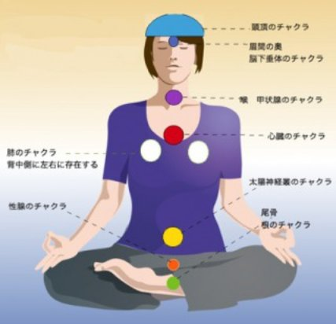
図４
さらに本格的な性エネルギー昇華をお伝えしよう。
このエクササイズは日頃停滞している性エネルギーを
昇華して、健康になるだけではなく、
チャクラを開発して潜在パワーを目覚めさせるものだ。
私たちは性エネルギーを活用する方法知らないために、
肉体を含め、霊的な体、つまり思考、感情などのパワーが
混乱し、それぞれが勝手に機能している状態である。
PCに例えるならば、ソフトやアプリが勝手にフル稼働して
オーバーワークでフリーズ寸前の状態と言えるだろう。
このエクササイズはバラバラに流れているエネルギーを
イダー、ピンガラとスシュムの主要なナディに通して、
エネルギーの調和をはかり、さらにはチャクラの機能を
清浄にする目的で行う。
そうすれば、徐々にチャクラが発動して、
本来持っていた機能はもちろん、
眠っていたパワーを発動できるのだ。
エクササイズのポイント
・マントラの発声
・呼吸法
・イマジネーション（想像力）
この３つに意識を集中する。
マンションやアパートで隣人へ配慮のために、
発声の時にはクラシックやヒーリング音楽を
流しておくと集中しやすいはずだ。
呼吸法は腹式呼吸を心がける。
練習方法は本書では割愛するが深い呼吸の方が
最大の効果が出る。
イマジネーションの高め方も本書では練習方法は割愛するが、
日頃から美しいもの、
芸術性の高いものに接する姿勢が大事だ。
テレビや動画を見すぎると雑念で集中しにくくなる。
目を酷使しないこと、よく休ませることもポイントになる。
また、適度な運動も全身の緊張をとりのぞき、
このエクササイズの効果を高める。
エクササイズを行う条件
７歳から独身者の方に適している。
結婚している方も行えるが、
結婚者のためのエクササイズもあるのでいずれ紹介しよう。
飲酒の後は避けよう。
タバコを吸った直後も、循環が良くなるので、
ニコチンをはじめとする有害物質が全身に巡り
体にダメージが大きいので避けた方が良いだろう。
後述するが、このエクササイズを継続すると、
飲酒、喫煙など様々な耽溺から離脱しやすくなる。
なかにはやめようと思わなくても、
自然にできなくなる方もいる。
時間
時間は朝晩とできれば日中を入れて２回から３回行うと良い。
伝統的なヨーガでは
ブラフマムフルタと呼ばれる時間が指定されている。
朝の4時からの２時間を指している。
また日没時や就寝時、昼頃が最適とされているが、
あまりこだわる必要はない。
場所と方角
一人で行うと良い。
慣れてくればどこでもできるようになる。
方角は東か北を向いて行うと良いとされているが、
これもこだわる必要はない。
「スワミシヴァナンダの瞑想をきわめる」という
初心者向けの本があるので読んでみると良いだろう。
産調出版から邦訳がある。
実践方法
それでは早速実践してみよう。
まず 図1 の絵を参考にエネルギーの流れと
チャクラの位置を心に留めておく。
1 背中を真っ直ぐにして座る。
座り方は自由だが椅子に座った場合は
足を組まない方が良い。
2 尾骨から数えて４つ上あたりの仙骨に
こんこんと湧き出る命の泉を想像する。
その泉を視覚化する。
泉からは純白の輝くばかりの光が
朝靄（あさもや）のように立ち上っている。
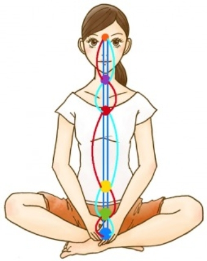
図２
3. その朝靄のような性エネルギーはイダーとピンガラの
２本のナディを通して上昇する。同時にゆっくりと息を吸う。
腹式呼吸を用いて肺の下から上まで、
そして肩のすぐ下まで吸気でいっぱいにする。
イダーとピンガラの上昇するエネルギーは、
まるで仲の良い２匹の蛇のように絡み合いながら
アジュナーチャクラまで上昇し、
２匹はそこで溶け合って黄金色の光に変わる。 図３
図３
この黄金色の光のエネルギーで脳細胞を満たす。
この黄金色のエネルギーは脳と自律神経を修復し、
そして栄養を与え再生すると意念する。
息を２〜3秒止める。（保息）
呼吸はゆっくりと鼻から行うのが基本だ。
１〜３までは、眉間から肺のチャクラまでの
共通したメソッドである。
１〜３まで呼吸と想像力をもって実施したら、
各チャクラの開発を行う。
先ほどの黄金のエネルギーが眉間の奥にある
アジュナー・チャクラに注入されていくことを
想像する。同時にマントラを唱える。
IIIINNNN イーン
口を大きく横に開いてはっきりと発音する。
そしてアジュナー・チャクラが
右回りに回転することを想像する。
このチャクラのシンボルが回転すると、
白い光の渦のように輝く。
このマントラによってチャクラは振動し
輝きを増して超視覚が目覚める。
エクササイズは全体を通して集中して行う。
他のことを考えながら散漫な注意力では効果はない。
また、体はじっとして動かさないようにしよう。
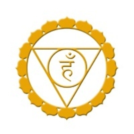
同じように息を吸いながら
１〜３のステップを実行する。
次は黄金のエネルギーを喉のヴィシュダ・チャクラ
へ向ける。
息を吐きながら
EEEENNNNエーン
とマントラを唱える。
このチャクラは紫のエネルギーを発している。
マントラによってチャクラが右回転して
紫色の輝く光が放射状に広がる。
このチャクラの開発により、
霊的な存在と会話ができるようになるだろう。
同様に１〜３を行う。
このチャクラは
真っ赤な薔薇のような美しい色をしている。
息を吐きながらOOOONNNN オーンとマントラを唱える。
心臓のチャクラが赤色に輝き、
渦のように右回りに回転することを想像する。
このマントラによって心臓のチャクラが目覚めると
崇高な感情と信仰心が目覚める。
本来、宗教は存在しない。それは人間が作ったものだ。
人はもともと神であり物質主義に陥ったために
カルマに囚われて無力な夢を見ているだけなのだ。
意識が目覚めることで自分が何者かを思い出すだろう。
ヨーガの経典によると、このチャクラに集中するものは
肉体ごと空を飛び（ヒーナスの科学）
神々に直接会うことができると言われている。
このチャクラは臍を中心に存在する。
このチャクラはテレパシーの能力と関係する。
チベットの古代の医学では、人間には３つの脳があると
されている。
私たちがよく知っている脳と、
全身をめぐる交感神経、そして太陽神経叢だ。
見たり聞いたり、感じた情報は私たちの心に入る前に、
フィルターを通る。
ヴィパッサナーの教えではヴェーダナーと説明しているが、
その機能を持つのがこのチャクラなのだ。
特に消化と関係もしている。
大変なストレスがあると消化器官の変調をもたらすのは、
私たちが外からの情報と、現実と心と感情をきちんと整理せずに、
自分の考えで受け取るからだ。
このように受け取った情報を 印象のエネルギー と呼ぶ。
このテーマは大変重要なので、少し解説しておこう。
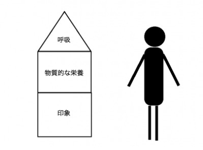
私たちの有機的な体を三階建ての建物と考えてみよう。
人間は呼吸ができなければ5分後には死んでしまう。
同様に物質的な栄養なしでは少なくとも１ヶ月も生きられない。
では、印象とはなんだろうか？
何故、印象が栄養と言えるのか？
実際にあった話をしよう。
あるとき、ある小さな子供を持つ母親の職場に
息子が事故で死んでしまったとの連絡が届いた。
その女性は激しく動揺して、心臓の発作を起こし、
心臓から血栓が脳に飛んでしまい、
結果的に脳梗塞を起こして死亡してしまったのだ。
ところが、その連絡は間違いだった。
警察の担当者が、事故で亡くなった子供の名前と
その友達の息子の名前を取り違えて連絡したのだった。
現実ではない出来事で、何故彼女は死んだのだろうか？
私たちが見ている世界は現実とは違うものと言える。
私はたびたびインド、タイに旅行に行くが、
インドではヨーガの修養、タイではヴィパッサナー
つまりマインドフルネスを修養する。
実際のところ、ヴィパッサナー瞑想は仏教と呼ばれるが、
根本的にはヨーガと同じシステムなのだ。
しかしながら、タイでの修行者と話し合うとき、
多くの人が十分に理解できていないのが、
この印象の変換なのである。
これは重要な経典であるアーナーパーナ・スッタ（出入息念経）
の中でも重要であり難解な部分に関係した話だ。
ブッダダーサ比丘による解説書の
「呼吸によるマインドフルネス」サンガ出版
ラリー・ローゼンバーグ氏による
「呼吸による癒し」春秋社などの良書があるので
興味ある方は読まれると良いだろう。
この性エネルギー昇華、クンダリニーヨーガ、
21世紀のクリヤヨガの修法の中でも、
このマインドの科学は大変重要なものである。
何故ならば、
この科学なしに内的なエネルギーを目覚めさせることは、
家庭用電化製品に１００万ボルトの電流を流すようなものだからだ。
ですから、この印象の変換は一回で読んで分からないからといって
放り投げないでいただきたい。
何度も繰り返し読んで、
先ほど挙げた書物を読み実践してみるのも良いだろう。
ここでは敢えて伝統的なヴィパッサナーの考え方ではなく、
また、難しい用語を用いないで、印象という観点から話してみよう。
そうすれば、よりこの考え方が理解しやすいはずだ。
さて、現実に起きた出来事、あるいは起きたと思われる出来事を
私たちは、起きたと思い込み、
あるいは自分の考えに合わせて解釈している。
ですから、同じ屈辱的な言葉に、ある人は怒り狂い、
ある人は笑い飛ばし、時には絶望して自死する人もいるのだ。
あなたの考えと、受け取った情報である 印象 を
どのように解釈、 変換 するかが
あなたの人生の質と人生の結末を変えるといえよう。
もし言葉通りに反応して、よくあるように相手を刃物で傷つければ
あなたの人生は一生を刑務所で過ごすことになるやもしれない。
お分かりだろうか？
多くの人は、ただ楽器のように外の出来事、
他人の言葉に機械的に反応している。
そこには本来の自分というものがない。
過去の出来事、あるいはもっと古い過去（前世などの）
サムスカーラという古いデータに基づいて解釈し
現実をありのままに見たり、聞いたり、感じるどころか、
自分が作り上げた世界というフィルターを通して、
世界を見ているのだ。
そのフィルターの役割をしているのが マニピュラ・チャクラ だ。
自己を知る事、
物事をありのままに見る訓練で正常な機能を取り戻せる。
このチャクラを開発するには、
マントラを唱えて瞑想するだけではなく、
いますぐに、印象を変換することが大事だ。
言い換えるならば" 新しい価値観 "が必要なのだ。
「新しいワインには新しい皮袋が必要だ」
イエス・キリスト
もし、古い、物質主義の考えでこれらの行法を行えば、
新しいワインが古いワインの皮袋を裂いてしまうように、
マインドは壊れるだろう（つまり精神の錯乱）
これが、クンダリニーの科学が危険と言われる所以である。
多くの人は変わろうとしない、古い因習や自分の考えにこだわり
そして破綻する。
この科学に実践には新しいマインドを用意しなければならない。
エクササイズ
１〜３を実行したならば、
体の前面をた滝が落ちるようにエネルギーを
マニピュラ・チャクラまで下ろす。
そしてマントラ UUUUNNNNを唱える。
同時に、チャクラが右向きに渦を巻いて回転する様子を
思い浮かべる。
このチャクラは目覚めると黄色の光を放つ。
このようにして、
太陽神経叢の働きは正常化する。
人間という有機体は、この臍にあるエネルギーフィールドから
多くの栄養を受ける。
消化器官がこの位置にあるのは当然であり、
それゆえに、受け取ったエネルギーを変換しなければ、
消化器官の機能不全、胃潰瘍やポリープ、癌などの
疾患を生み出すだろう。
また、印象の変換が行われない結果、
よくあることだが、
不健全な食物、アルコールの多量摂取、
過度の喫煙、暴飲暴食、薬のオーバードーズ（過剰服用）
大麻、コカイン、覚醒剤などの危険な薬へ手を出す人が多い。
それは、正常なマニピュラ・チャクラが機能しない結果、
７つの地獄のチャクラとも言われる
低位のチャクラが目覚めるからだ。
胃、腸、肝臓、脾臓、膵臓、胆嚢、腎臓に
秘密のチャクラが存在する。
貪欲、怒り、悲しみ絶望、妬みそしりなどの、
否定的な想いや感情が消化されず停滞した時に、
それらのチャクラがネガティブに目覚める。
それゆえに、人は満たされない感情を満たすために、
前述した否定的な栄養を摂り続けるのだ。
したがって、生活習慣の改善と食事の内容は大事である。
バランスのとれた生活とエクササイズによって
マニピュラ・チャクラを覚醒させることは、
７つのチャクラのバランスを取るだけではなく、
心と感情のバランスをとる。
そして重要ポイントなのは、
クンダリニーはこの、太陽神経叢を中心とした
チャクラから栄養を受け取り成長するということだ。
それゆえに。
心と感情というマインドの働きとマニピュラの
関係性を理解することは大切な事なのだ。
このチャクラは肺の背中側に存在する。
１〜３までのプロセスの後、
今までと違って下の図のように背中側に
エネルギーを送る。
同時にマントラ AAAANNNN を唱える。
白く輝くエネルギーが渦巻く様を、
図を参照して想像してみよう。
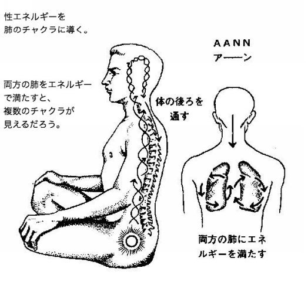
このチャクラは、単に記憶力を高めるだけではなく、
前世の記憶を呼び起こすことができる。
私たちはこの世界に意味があって生まれてきている。
私たちは、前世の約束を果たすために生まれてきた
そう言っても過言ではないだろう。
私たちの記憶は７つの体のうち、コーザル体
と呼ばれるエネルギーフィールドに蓄積していく。
ここはアカシックレコードと呼ばれる世界と繋がっている。
そして、潜在意識は小脳から下の延髄にかけて存在する。
夜中にトイレに寝ぼけまなこで行っても、
怪我もせずに階段を上り下りして、考えなくてもドアを開け閉めし
無事にベッドに戻れるのは、
小脳で無意識にコントロールされた行動だからだ。
小脳変性症などの病気になると、
今まで考えなくてもできていたことが出来なくなる。
逆に霊的に考えると、
瞑想などで自分を見つめる作業を怠ると、
小脳で問題が起きると考えられる。
さらに深い精妙な世界は潜在意識から無意識と繋がり、
その中に過去生の記憶が眠っている。
過去生はあなたが不滅であることを証明するものだ。
それはあなた自身の存在の証なのだ。
過去におこなったことは、
霊的な反復の法則で、今生でも繰り返すだろう。
前世を思い出せないことは、
今の人生を新たにやり直すために配慮されたからなのだ。
もしみなさんが、真面目にこれらのエクササイズを実行するのなら、
ある日、少しずつ前世を思い出すだろう。
あるときは、瞑想中に、あるときは夢の中で。
それらは非常に興味深い体験だ。
それによって、なぜこんなに閉所が怖いのか？
なぜこんなに水辺が恐ろしいのか？
など不思議な形で理解できる。
そして、そのような体験をすると、
理由の分からなかった習慣や行動が改善できたりするのだ。
サハスララ スワディスタナ ムラダラ
このエクササイズでは、
性エネルギーを昇華することによりクンダリーを覚醒させる。
ここまで読んでいただいた賢明な読者の方には
お分りいただけると思うのだが、
クンダリニーを目覚めさせるためには、
十分な準備が必要だ。
本書の記述された通りの順番でおこなっていくと良い。
このクンダリニー覚醒のためのエクササイズだけを行うことは
お勧めしない。
それでは早速実践してみよう。
1 鼻から息を大きく吸い生殖器に集中する。
このチャクラはスワディスタナ。チャクラという。
（男性は睾丸（精嚢）女性は子宮と卵巣）
そこに純粋な性エネルギーが
まるで泉のように湧き出している様を思い浮かべる。
口を閉じたまま、
モータ音や牛の鳴き声のように低音で次のマントラを唱える。
MMMMMMMムー
そしてマントラのバイブレーションで性エネルギーが
生殖器に停滞していたエネルギーを
活動させて純化すると意念する。
2 もう一度、鼻から息を吸う。
そして次のマントラを発声する。
SSSSSSSSSSSSSSSスー
このマントラは歯の隙間から息を吐き出す方法で発声する。
ガラガラ蛇の発する音とよく似ている。
同時に黄金色の蛇がムラダラ・チャクラの寝床から目覚めて、
スシュムナ管の中に入り、
背骨に沿って上昇する様を思い浮かべる。
SSSSSスーのマントラで息を吐きながら、
黄金色の蛇クンダリニーがサハスララ・チャクラに
達することを思い浮かべる。
そして、その蛇が最後は心臓に降り
左心室の小さな小部屋に鎮座することを想像する。
古来から、ここは魂が存在する場所として考えられている。
以上のアジュナ・チャクラからクンダリニー覚醒の技法までが、
１サイクルだ。
このサイクルを最初３サイクルから始めて、
徐々に体力に合わせて増やすと良いだろう。
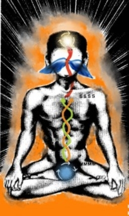
このエクササイズは、アジュナチャクラから、
ヴィシュダ、アナハタ、マニピュラ、
スワディスタナ、ムラダラへと順番に行うと良い。
最後は性エネルギーをサハスララへ上昇させることで、
１サイクルが終了する。
ゆっくりとした呼吸を心がけて、マントラをできるだけ
はっきりと長く伸ばして唱える。
最初は３サイクルから行うと良い。
慣れてくれば数を増やしていく。
心地よく行えるのであれば、上限はない。
日頃は下腹部に停滞している性エネルギーを、
上昇させることにより性的な問題を解決する。
つまり、マスターベーションによる性の消耗。
ポルノ中毒、性本能や肉欲、
情欲中心の行動からの解放。
結果的に安定した心と感情を取り戻せる。
また、この昇華されたエネルギーによって、
知性と愛が開発される。
潜在能力が目覚めることにより、
学力の向上、仕事の能率のUP、
次から次とアイデアが湧いてくるようになって、
生活が良い方向に変容する。
またエクササイズの解説に書いてあるように、
シッディ（超能力）も目覚めていく。
もちろん、これらのことは一度にいっぺんには起きない。
PCと同じで、CPUの処理能力を超えたものは
インストールしても動かなくなる。
人間はPCとは違い進化させることができるが時間がかかる。
焦らずに、霊性修行をおこなおう。
第４章では、
どのようにして自己変容をもたらすかについて解説し
重要な技法をお伝えする。
数多くの性エネルギー昇華法（クリヤヨガ）の技法が存在する。
この第４章でお伝えするのは、
クリヤヨガの技法でも重要なものの一つである。
さて、この重要な技法を実践する前に、
是非とも知ってもらいたい、理解していただきたいことがある。
それは マインドの科学 である。
この世界はマインドが物質化したものにほかならない。
ヴェーダ（インド哲学）によると、
宇宙の始まりに、神はこの世界を想い、OMの音とともに
創造されたという。
言い換えるならば、この世界は神の想いそのものと言える。
私たちが苦しむのはこの世界が思い通りにならないだけではなく、
自分の思いや感情さえもコントロールできないからだ。
ヨーガの修行の結果、悟りを得た仏陀も"苦しみ"について
詳細に語っている。
心を解体する
全てはマインド（心）から生み出されている。
心を解体すればこの世界も問題も消滅してしまう。
しかし、そのためにはマインドの科学を理解しなければならない。
マインドを理解すること、
言い換えれば自己を深く理解することなしに、
この作業を行うことは非常に危険である。
十分な自己に対する愛がなければ、
他者を愛することはできないだろう。
自己に対する愛が欠如している人は、マインドの迷宮に入り込み、
自己破壊と取り違えて他者への憎悪を増強する。
この世界はパズルだ
精妙なこの世界を理解する、
つまりマインドの仕組みを理解することによって
さらには、クリヤヨガ（性エネルギー昇華）を
実践することによってマインドの解体は可能である。
あなたが親しい友人に対して抱いているのは、
優しく、思いやりがある友人の姿と立ち振る舞いだ。
しかしある時、別な友人が君に、
その親友が君に対して中傷し、陰口を口にしていると教えられる。
そうすると、君の親友に対してのイメージは
全く反対のものに書き換えられる。
君に対して敵意を持ち悪意を抱く油断ならない人物のものに。
たとえ、別の友人の話が全くの嘘や、思い違いでも
親友が君に近づくと、以前のように反応できなくなるだろう。
このように、マインドとは目に見えなくても、
常に化学組成や物質のように成分を変える。
一度作り上げられたイメージは消すことは困難だろう。
もし私が「ピンクの象を思い浮かべないでください」と
君に言ったのならば。
私が象の話をするたびに、また他の誰かが象の話をするたびに
あなたは「ピンクの象」のイメージを思い起こす。
それがマインドの働きである。
これらのイメージは、あなたの思い（メンタル）と感情
そして内部エネルギーから栄養を得る。
注視すべきことがらは、
あなたが、あるイメージ、概念、考えを愛するだけではなく
反対に反抗すればするほど、その考えに囚われてしまい、
あなたは、その実体（自我）を育てることになるのだ。
これが人をして矛盾した行動に貶めているマインドの機能である。
エゴ、我は、独立した一人の人間のように、
主人であるべき君の心と感情、そして行動までも支配する。
マインドとは器であり、そこには様々なイメージが住んでいる。
自分を愛してやまない私
いつも自分はむくわれず被害者だという私
親からの愛が受けられず愛に飢える私
許されない間違いをしてしまい自分を許さない私
いつだって人に認められたい私
カッコイイ最高の車で街を走り皆に振り向いてもらいたい私
昔の彼氏にされた仕打ちにいつか一矢報いたい私
などなど
数えきれず、いったいどれほどの私が存在するのか、
数えようもない。
まるで一軒の家の中に、複数の人間が住んでいるかのようだ。
このような心理的寄生体は互いに争いさえする。
健康を気遣い禁煙を考える私と
どうしてもタバコを吸いたい私。
金を節約したい自分と家族思いの私と、
ギャンブルに熱中してお金を手に入れたい私。
妻を大切にして家庭を築きたい私と、
奇跡的出会いに心ときめき、どうなっても良いと思う私。
などなど。
数多くのアンチテーゼと矛盾と葛藤が渦巻く。
一人の人間というには程遠い存在である。
明らかに人間と呼ばれる存在は、
真の自我を持たない。
真の幸福にたどり着くには心理的治療を必要とする。
マインドでマインドを克服することは不可能である。
感情で感情も克服できない。
ヴィパッサナー（マインドフルネス）などは非常に有用である。
しかし、それらは初歩的な修養でしかない。
根本的な治療が必要である。
私たちは、人間と言えるレベルには到達していない。
進化過程の有機的機械であり、ロボットである。
７つの体を形成すべきなのに、
反対にそれぞれの内部エネルギーである、
電気的体（エーテル）、感情体、思考体、
コーザル体（様々な種類の記憶 トラウマ）
のエネルギーは、内部で渦巻き混乱している。
真の自我の不在のために、常に他人の意見や常識に
翻弄されていて、木の葉のように人生という偉大な
円形劇場の中で退屈な劇を繰り返しているマリオネットである。
より大きな力、力強く全てを変換できる力が必要である。
それこそが昇華された性エネルギーであり、
クンダリニー、火の蛇である。
まず背中をまっすぐにして座る。
HAMハームと長く唱える。
同時に性エネルギーが性腺からイダーとピンガラを通り
上昇して脳に至ることを想像する。
想像するということは実際に起きていることであると、
固く確信して行う。ここでは２〜3秒息を止める。
SAHサーと唱えながら息を吐き出す。
想像力を用いて脳で光り輝かせたエネルギーを、
心臓に下ろす。
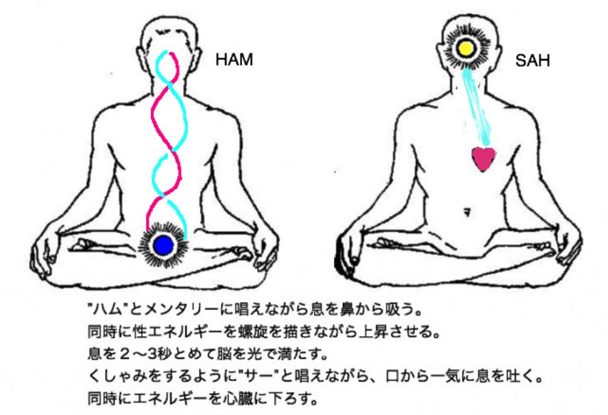
私たちは常に呼吸とともに生きている。
１分間に20回呼吸しているとすると、
１日では28800回は呼吸している。
そして、呼吸するたびにSOHAMと唱えている。
吸気ではSO、呼気ではHAMと唱えている。
この音、マントラの意味は「私は神である」
という意味である。
つまり人は無意識に「私は神である」と唱えているのだ。
残念ながら、呼吸は常に
「自分は肉体ではない（アハム エータット ナ）
私は神である（アハム ブラーマンスミ）」
と宣言しているのに、私たちは物質世界に没入してしまい、
自分がどこから来て、何をしに来て、どこに帰るのか？
という人生最大の謎について思い起こすこともなく、
ただ目先のことに囚われて生きている。
その大きな原因の一つが、
私たちの内的エネルギーが外側に流れているということだ。
人は内奥の自己を省みることなく、
常に食べ物、着るもの、仕事、セックス、スピード、スポーツに
目を向けて、誰も人生の意義を語り合おうとはしない。
それゆえ、このエネルギーの流れを逆転する必要がある。
それが、聖賢パタンジャリが八支則（ヨーガの八段階）で
教えた プラティヤハーラー という意味なのだ。
SO・HAMのマントラを逆転させるとハムサHAM・SAHとなる。
20世紀のクリヤヨガでは
HON・SO ホーン・ソー技法が伝承された。
HAM・SAHハム・サーはさらに進化した21世紀の技法である。
この行法により、驚くべきことが起こる。
そして瞑想と組み合わせることにより、
悟りを体験するだろう。
HAM・SAHの技法を根気強く実施することにより
悟りを容易に体験できる。
悟りについて数えきれない著書、講義、コースが存在する。
悟りについて多くの人が語るが、悟りを体験する人は少ない。
この世界には、もう理論は十分溢れている。
今こそ実体験する時なのだ。
マインドが、それ自身がその働きを止めて静まった時、
悟りは自らやってくる。
マインドとはアンチテーゼ（対立）、矛盾の闘争の
繰り返しである。マインドを空にする必要がある。
この病的なマインドを根本的に治療するには、
アハンカーラ（自我 心の鞘）を溶解すること、
新しい７つの体を再生することが求められる。
それが真のクンダリニーの科学であり、
シュリー・クリシュナからババジに伝えられた秘密、
そしてヨギラジ（ラヒリマハサヤ大師）の真の教えである。
ハム・サーの技法によって賢明な読者は悟りを知るだろう。
このようにしてリアリティー（真理）を体験することにより
人類は進化することができる。
聖賢パタンジャリはヨーガ・スートラ経典の中で、
ヨーガの本質についてつまびらかに解いている。
世界中のヨーガ教師のほとんど誰も
明確にこのプラティヤハーラを教えていない。
もしあなたが、チベットの奥地に行っても、
インドのヴェーダの大学に入学しても、
この秘密を知ることはないだろう。
あるとき、
私たちの友人がNYで生徒にこのHAM・SAHを教えた時、
一人の生徒が椅子から滑り落ちた。
驚いて何が起こったのかを尋ねたところ、
「私はインドでヴェーダを９年間学び、
ようやくこの技法を学びました」
「それをあなたはこんなに簡単に教えるのですか？」
と彼は詰め寄って問いただしたというのだ。
もはやクリヤヨガを秘密にする時代は終わった。
一人一人が悟りを開く時代が来たからなのだ。
1 ハム・サーの技法を実施する。
2 その後心臓に集中する。
そこにはシヴァ、アートマンである魂が鎮座している。
3 その魂に向かって話しかける。
「オムニス イアウム インティモ」
これはラテン語のマントラである。
「私の中にある神よ。あなたは父であり母であります」
「私が真理を体験するように道を照らし導きたまえ」
4 そして心臓に集中したまま呼吸を自然にする。
ポイント
ハム・サーを繰り返し行うと、
自分自身の中に何もない空間が現れる。
それは空ではあるが光に満たされた空間だ。
私はこの技法を学んだときに哲学については初学者で
しかも空の概念をほとんど知らなかった。
ただひたすら、ハム・サーを実践していると、
やがて呼吸が穏やかになり、ハムサーを続けていられなくなった。
仕方なく目をつぶったまま、心臓に集中しているうちに、
何かスイッチが入ったかのように意識が晴明になり、
光明に満ちた空 を体験したのだ。
呼吸はおそらく１分間に１回程度になったと思う。
のちに、この空の哲学を学び、何が起きたかを理解した。
怖れずに、実践していただきたい。
サマディは数多くの種類と段階があり、
ヴェーダや仏教でも分類がされている。
最高のサマディとは常に超越意識に入りながらも
日常意識を保っている状態である。
大聖ラーマクリシュナやアーナンダモイマーは
ほぼ常に超越意識に入っていたが、それは彼らは
人類を導く特別な存在だからと私は理解している。
サマディは何ら特別なものではない。
そのように思う人は、自称聖者の餌食になるだろう。
「私は悟った」とかいう類の人たちからは遠く離れていた方が
身のためであるし、
もし読者が何か体験しても決して人に言わない方が良い。
言っても相手は理解できないし、
否定的な反応は、自身の心を乱して
サーダナ（霊性修行）の悪影響になる。
私はドイツOTO聖騎士団のGnosisの流派から、
この技法を学んだ。
そのため、伝統的な祈りの中にはラテン語で唱えるものを
多く学んだが、祈りの言葉自体は真摯なものであれば
どのような言語でも言葉でも構わない。
ただ伝統的なものは東西にかかわらず歴史を通じた力があるのだ。
もし読者の方で、神という言葉に抵抗があるのであれば、
大いなる自己という名前で呼んでもいいし、私の魂よ
と呼びかけても良い。
また、自分が信頼しているマントラを唱えるのも勧める。
例えば、ガヤトリマントラやムリチュンジュナマントラなど
ヴェーダの伝統的なマントラも有用である。
今は動画サイトなどで視聴できるので活用すると良いだろう。
いずれヴェーダの伝統的な瞑想をテーマに本を書く予定である。
瞑想を行い、特に本書で紹介した技法を行うと
自然とOBE（体外離脱体験）をするようになる。
これはごく普通に起きるので、心配しなくて良い。
むしろ、この現象について学び理解しておくと、
無用な恐れや心配を排除できるだけではなく、
２４時間を有効に使うことができるようになる。
すでにアメリカやイギリスなどの西欧諸国では、
瞑想だけではなくOBEについての研究が盛んであり、
多くの資料が書店に並んでいる。
僕自身が初めて体験したのは、思春期の真っただ中で
性の目覚めとともに大いに苦しんでいる時だった。
幼少の時から不思議な体験を繰り返していたので、
自分の力をいかにしてコントロールするかについて
奮闘している時期だった。
毎日空手で体を動かして、暇をみては瞑想していた。
ハム・サーの技法も熱心に行っていた。
そのせいか夜寝ている間に不思議な体験をするようになった。
よくあることだが、最初は金縛りである。
それから、布団の周りの畳の上をだれかが歩き回る、
体をゆさゆさと揺さぶられる、
声が聞こえる、目を閉じていても姿が見える。
という、おきまりのパターンになってきた。
それが何ヶ月も続くと、最初は怖かったものが
だんだん腹が立ってくるものである。
ある日、
「うわー！」と声を出しながら、
といっても金縛り中なので実際は声は出ていないが、
何とか立ち上がって、その正体不明のやつと対峙してやろうと
力を振り絞って立ち上がったところ、
気がついたら立ち上がっていたのだ。
そうすると、そこには誰もいなくて、
ただ部屋に浮き上がっている僕がいたのだ。
といっても、
それから自由に肉体から離脱できるようになったわけではない。
ただ、本書で紹介する方法を用いて何度も離脱体験をした。
このアストラル・プロジェクションを実践することで
得られる利点は以下の通りである。
1 死というものはない、ことを実際に体験し理解できる。
自分自身の肉体を見るということは最初は大変な驚きである。
しかし、人は霊であり、死ぬということは、
ただ肉体を抜き捨てるだけ 、ということが理解できるようになる。
2 必要な情報を得られる。
私たちは悩んだ時、どちらを選択したら良いか分からない時
誰かに相談したり、人によっては占い師や先生とか導師とか
言われる人のところへ行くが、結果的に答えが見つからなかったり、
間違っていたり、最悪な場合利用されることも多い。
この技法で、
霊的な存在と会うことでアドバイスを受けることができる。
カール・ユングも夢（アストラル世界）でフィレモンという
導師にあっていたことを話している。
3 ２４時間を活用できる。
私たちは１日のうち８時間眠っている。
そうすると、人生の三分の一は夢の中に生きているのである。
この時間をサーダナとすることができるのだ。
1 午睡か夜の就寝時に行う
頭を北向きにすると離脱しやすいという人もいる。
寝具は心地よいものを選び、休みの日には日に干したり
して寝心地良い状態にしておく。
お香を焚いたり、アロマオイルを額に塗ったりしても良い。
2 マントラを唱える
数多くのマントラがある。いくつか列挙しておこう。
好みのものを使用すると良い。
・FA RA ON ファーラーオーンと長く唱える。Raは巻き舌だ。
・LA RA ラー（巻き舌） ラーと交互に繰り返して唱える。
同時に性エネルギーがイダーとピンガラを通じて
上昇することを思い描く。
・TAI RE RE RE タイ レー レー レー（三回とも巻き舌のレー）
3 眠気が来たら起き上がる。
OBEについては数多くの本がある。
このエクササイズの特徴は、
眠りに入る前に起き上がるということだ。
先ほどの私自身の体験にもあったが、
眠りに入る瞬間に実際に起き上がるのだ。
そうすることにより、気がつけば体外離脱しているはずだ。
しかし、これは大変な根気が必要である。
眠りに入る瞬間に意識を保っているのも難しいものだ。
そこで、
アストラル体験をするためのアドバイスをしておきたい。
1 まず日頃から、自分自身に問いかける練習をする。
ここはどこだろうか？現実の世界か？それとも夢の中にいるのだろうか？
この習慣を忘れないようにすると、
夢の中でも夢を見ていることに気づくことができる。
そうすれば、自分の行きたいところ、会いたい人を
考えることにより、夢をコントロールできるだろう。
2 日頃から飛び上がる習慣を身につける
気がついたらジャンプしてみよう。
ただし安全には気をつけていただきたい。
もし習慣化できれば夢の中でも飛び上がり、そのまま飛べるだろう。
3 朝目が覚めたら、体をできるだけ動かさないようにして
体験したことや夢を思い出すようにする。
これは大変重要である。
もし、高いお金を払って外国旅行をしたとして、
それを思い出せなかったら、大変もったいないことだ。
夜の間に貴重な体験をしていてもそれを思い出せないことは
まさに宝の持ち腐れである。
4 エレベータに乗るときや、飛行機に乗るときに感じる
浮遊感を気がついたら思い起こすようにする。
この習慣を身につけると、
夢の中でも自然に飛んでいることがある。
私たちが夜の間に体験している、夢の世界は、
実際のところアストラル世界である。
したがって、
アストラル・プロジェクションの技法がうまくいかなくても
諦めることはない。
毎日夢を見ているのだから、夢をコントロールできれば良いのだ。
そこは摩訶不思議な世界であり、
読者が望めばユングや多くの人が体験しているように
精神的指導者に会うこともできるし、様々な世界を冒険できる。
根気こそ成功の鍵
必ず成功する。
毎回うまくいかなくても、
アドバイスを参考に実践していただきたい。
他にも様々な技法があるが、機会を見て紹介しよう。
私自身、様々な体験をしたが、
もっとも多いのは、
未来に起きる出来事にアドバイスをもらったことだ。
それは、大変的確で役にたった。
ときにはあったこともない人にメッセージをもらったり、
将来起きる出来事をビジョンで見せてもらったりもした。
さて、実際に体から離れることは簡単にできるはずだが、
実際に自分の体を見たりすると、
最初は大変な恐怖を感じることがある。
部屋の中に自分の知らない人がいたり、
邪悪な存在を感じたりすることがあるからだ。
そこで部屋には自分が信頼する存在の写真や絵を飾っておくと良い。
好きな神様の絵などがお勧めだ。
そして身を守るマントラを覚えておくと良いだろう。
次のマントラを使用すると良い。
Klim Krishnaya Govindaya Gopijanavallabhaya Swaha
クリム クリシュナヤ ゴヴィンダヤ
ゴピハナヴァジャバヤ スヴァハー
これはヴェーダのマントラであり、このマントラを唱えると
ペンタグラム（五芒星）がアストラル界に形成されるという。
私は、毎日眠りに入ると、
必ず霊的な存在が部屋にやって来る時期があった。
日がたつにつれて、
目を閉じているのに姿がはっきり見えるようになり
さらには体の上にのしかかり、全身を押しつぶすようになった。
しかしながら、実にリアルな悪夢である。
よく見ると骸骨のような人物がマントを羽織って
夜中に窓から入って来るようになったのだ。
当時は１０階建てのマンションの６階に住んでいたので
ありえない話である。恐怖しか感じなかった。
このような現象は誰にもわかってもらえないことと、
対処の仕方がわからないことが大きな問題である。
同じ時期に、電車の中である女の子が母親に、
毎日恐ろしい人が夢に現れて、お腹を刺されて
腸がお腹から出てきて誰も助けてくれないし、
とても現実的で怖くてしょうがない、という話をしていた。
思い切ってこのマントラを教えたかったのだが、伝えられなかった。
思い出すたびに残念であり、その後が気になるのだが・・・・
私はといえば、ある日このマントラを唱えてみた。
もちろん声は出ないので、声に出すつもりで念じたのである。
その結果は驚くべきものだった。
まるで私の体の上で爆発が起きたようにエネルギーが
炸裂してその存在が消えてしまったのだ。
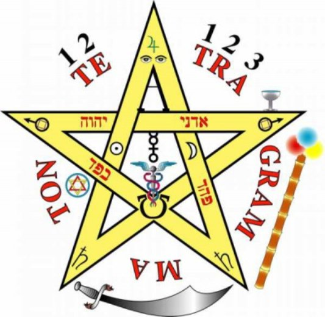
防御のためのペンタグラム
ペンタグラムを部屋に飾ることで霊的な防御ができる。
しかし大事なことは、現実と夢は繋がっているということだ。
日頃から考えていること、
感じていることをアストラル世界でも体験する。
極端な話、毎日恨みつらみの心を持ち、憎しみの心を持つならば、
そのような霊的な存在、つまり悪魔と呼ばれる存在がやってくるし、
そのような世界に導かれるだろう。自分の考えや感情をよく知り、
崇高な教えや考えに触れる機会をもとう。
人を思いやる気持ちをもち、実際に行動してみよう。
優しく話しかけたり、ちょっとしたねぎらいの言葉をかけてみよう。
美しいもの見たり聞いたりして、出かけてみよう。
恐ろしいニュースや動画を避けよう。
そして、読者自身が実際に体験するのが一番だろう。
アストラル界では君の霊を導く存在がいるし、
また君を誘惑したり、攻撃して来る存在もいる。
しかし、自分という存在が魂という本来は聖なるものであることを
疑わずに、助けを求めるのであれば、なんら危険なことはない。
それが証拠に朝は必ず目がさめるではないか。
それだから、幽体離脱が危険だという情報は根も葉もない嘘である。
このような霊的実験は大変有益であり、
それを邪魔するのは恐怖心なのだ。
祈りは科学であり、奇跡と呼ばれる現象を起こす魔法の鍵である。
日頃からいろいろなものに話しかけると良いだろう。
日本人は昔からアミニズムの中を生きてきた。
アミニズムとはひらたく言えば、精霊信仰である。
全てのものに命が宿るという考えである。
それは全ての宗教に見られるものであり、
表面的な形が違うにすぎない。
自分の机、靴、財布、太陽、友達、自分の体、
そして自分の心にも話しかけてあげよう。
現代で大きな問題になっているのは、
このような目に見えない繋がりが失われていることだ。
多くの瞑想の本があり、魔術の本があり、
様々な技法が伝えられている。
それでも、奇跡の話は稀にしか聞かない。
そこで最後に、大事な話をしよう。
それは自分自身と会話することである。
もし、このエクササイズが成功するならば、
読者は素晴らしいものを受け取るだろう。
人それぞれに、その贈り物は違うが、
きっと驚くはずである。
これは心理療法でよく行われる手法である。
私は、医療従事者であり、大学では心理療法を学んでいた。
長年、様々な瞑想を行い、自分の神秘的な体験に自信があったので、
正直なところカウンセリングや
このような心理療法を受け入れることもなかった。
大変幼稚に感じられて拒否してきたのだ。
しかし、
この自分自身との会話がいかに大切かを最近痛感している。
これは実生活に霊的な経験を生かす大きな鍵となる。
ぜひ、実践していただきたい。
1 まず椅子を二つ用意する。
2 そしていつも座る椅子の横にもう一つの椅子を置いて座る。
心の中で移動するのではなくて、
物理的に移動するのが重要だ。これが鍵なのだ。
3 なんでもいいから話しかけてみよう。
日頃自分に感じている不満でもいいし、
ねぎらいの言葉でもいい。
4 話しかけたら、もう一人の自分が何を答えるのか
想像力を用いて聞いてみよう。
5 もし何も言わないならば表情を見てみよう。
そして、「こんな気分かな・・・」
とか話しかけて返事を待ってみよう。
6 けっして焦らなくて良い。時間をかけてやってほしい。
そして大切なことは、自分自身のことを許してあげることなのだ。
人は優しくなれる。どんな人も許せるようになる。
しかし、最後まで許せないのは自分自身なのだ。
それができた時、奇跡は起きる。
急ぎ足でここまで記述してきた。
この広大な精神世界について書き表すことは
大変な作業である。
心からカール・ユング先生をはじめ、臨床心理学の
諸先生がたに敬意と感謝を捧げる。
また、私を導いてきてくれた霊的な存在に感謝する。
パラマハンサ・ヨガナンダジ、スワミ・シヴァナンダジ
に心から感謝する。
ノーシスのサマエル・アウン・べオール大師に感謝する。
私自身は様々な霊的な経験をしながら、懐疑的にこの世界と関わってきた。
そのため霊的な技法を実践しながらも、
学術的にどのような解釈がされるかを並行研究してきた。
そして結論としてこの著作を出版したのである。
つまり、ヴェーダ（インド哲学）的にいうと
この世は単なる夢であり、現実も夢も同じであるということだ。
ただ、平行して存在するこの世界は、それぞれの法則の違いだ。
つまりは、この世界では飛べないが別な世界では飛べるし、
念じるだけで物が動き、変化するということだ。
しかしながら、このようなことを理解し始めると
念じたことが現実に起きるようになったのだ。
結局は、科学と宗教には区別など存在しないこと。
宗教とは都合よく人が作り出したものであること。
科学的な信仰は奇跡を生み出すことを体験することができた。
21世紀に入るというのに、
至る所で戦争が起きている。
人々の中には不信と不和が増えるばかりだ。
根本的な解決策が必要である。
それは欺瞞と詭弁に満ちた政治的な手法による外交でもないし、
うわべだけの社交術や小手先の方法ではない何か。
本書がその答えである。
もし読者が真摯に実践するのであれば、
間違いなく効果が現れるだろう。
それではまた次書でお会いしよう。
笑うが良いさ、魔法など存在しないと。
笑うが良いさ、魔術の本など存在しないと。
だが、いつか君は知るだろう。
それが本当だということを。
僕のようにね。
サン・ジェルマン伯爵
ヨーガとこころの科学 スワミ・シヴァナンダ著
小山芙美子訳 東宣出版
スワミシヴァナンダの 瞑想をきわめる
産調出版
ロゴス・マントラ・テウルヒア サマエル・アウン・べオール著
ノーシス書院
呼吸による癒し
実践ヴィパッサナー瞑想 ローゼン・バーグ著
春秋社
夢の修行 チベット密教の叡智 ナムカイ・ノルブ著
永沢 哲 訳
その他割愛
著者について
マリア・ステファノ
日本在住。
医療従事者
OTO（ドイツ聖堂騎士団）のグノーシス派で学ぶ。
以降神秘学を長年研究する。
インド、ネパール、タイなどで瞑想の実践、指導を行う。
グノーシス出版
2018年2月23日 初版
この書物の許可なしの販売、コピーを禁じる。
販売元 Kanda-Yoga出版 中野 憲司
https://kanda-yoga.jimdo.com